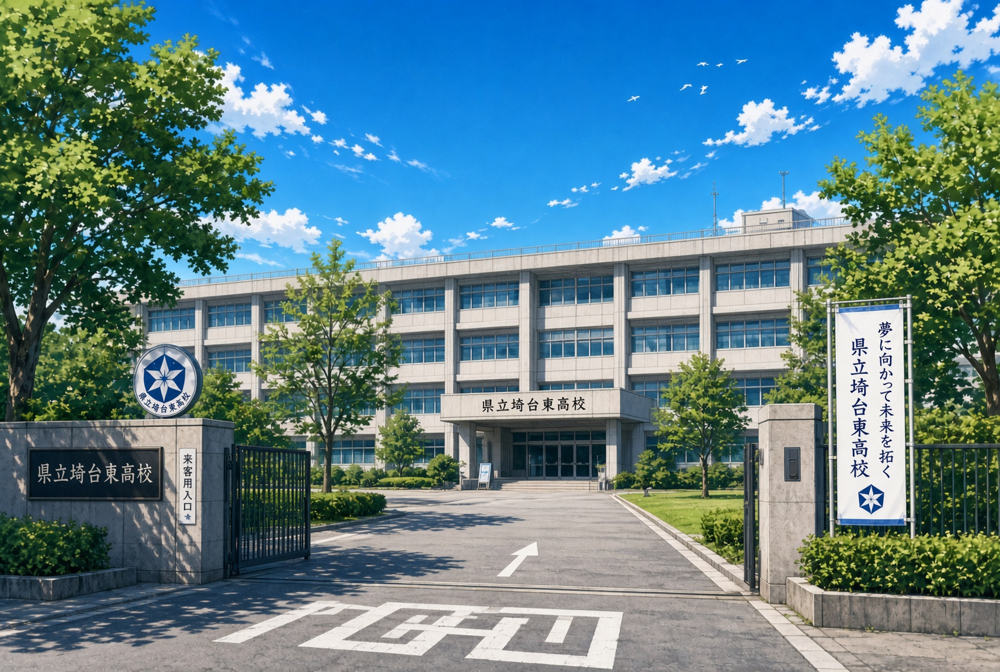
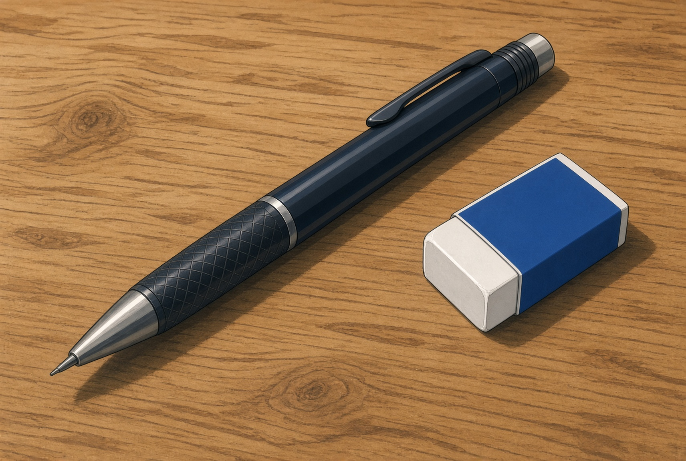
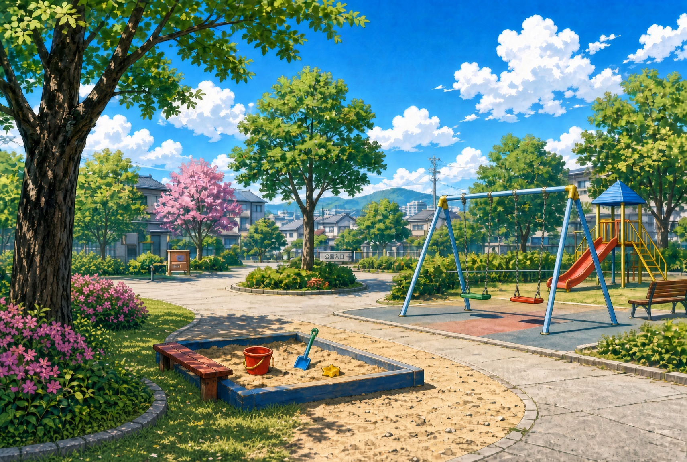

現代日本。世界には人知れず、異世界人や宇宙人がやってきており、主人公ケートの父親はそんな来訪者たちに関する仕事を公務員として行っていた。
逆転移してきたエルフの異世界人ララちゃんを保護した父親は、ケートの家に住まわせることを決め、同棲生活が始まる。
世界には魔力が存在しているらしいが、一般人には知られていない。妹エリカの不明だった病気もこの魔力が関係しているようで、ララちゃんが解決に導く。
ケートとララちゃん、そしてエリカの明るい同棲生活がはじまり、一年の行事を通して、親交を深めていく。
ケートたちの通う県立高校。普通科。
可もなく不可もなく。いたって普通、中堅の高等学校。学食がある。
ララちゃんの出身国という架空の東欧国家。もちろん誰も信じていない。
S県にある架空の市。
関東地方にあり、平野部の住宅街を中心に、小高い山々に川が流れている。

消しゴム">市内にある埼台市の市立病院。エリカが入院している。
市内を走る循環バス。以前は普通の路線で遠くまで走っていたが、近年変更され市内循環型に置き換えられた。
埼台市東区にある駅。ケートたちの最寄り駅。
人形を売ってる雑貨店などがある。
埼台市にある駅。東川駅から電車で一駅。駅前商店街がある市の中心市街地。
時期になると七夕の飾り付けがされて、キャンペーンが行われる。
リングやアクセサリーを売ってる装飾店などがある。
埼台市にある市民プール。だいぶ老朽化しているが、去年には流れるプールが完成した。
建て直した新しい更衣室、ポテト売り場やウォータースライダーなどがある。入場料が安い。

公園">コンビニの隣の公園。小さな広場があるだけのシンプルな公園。
通称「なかよし公園」。小さいころハルカと遊んだ思い出の場所。
ケートの家と学校の間にある、どこにでもある公園。
よく小学生が遊んでいて、砂場やトイレ、遊具、災害用倉庫なんかがある。
桜の木が植えられており、春にはお花見を楽しめる。
中吉田公園から続く川。川沿いに桜並木がある。
遠足やどんぐり拾いに行く市内の北西部にある小高い山。
お茶畑や山林があり、上まで登れば市内から東京まで一望できる。